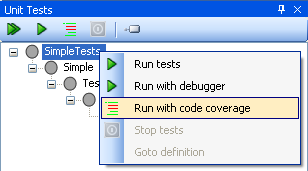
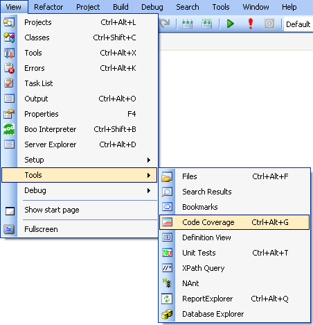
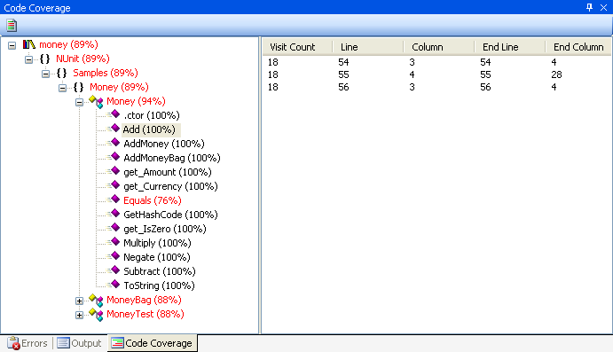
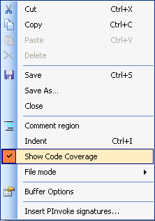
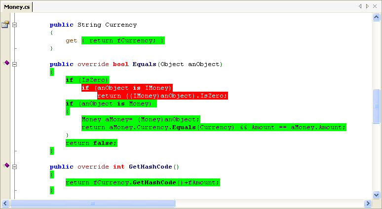

How much of your code is being actually being tested? SharpDevelop can use PartCover (an open source code profiler) to profile your code whilst the unit tests are being run and show you what parts of your code are covered.
Checking code coverage whilst running your tests can be done from the Unit Tests window by right clicking a test class or method and selecting Run with code coverage. This menu option is also available when you right click a test method or test class in the source code editor.

Whilst running the tests with code coverage any output from PartCover will be displayed in the Output window. After the test run is completed any failing tests will be displayed in the Errors window.
To see a summary of the code coverage results, from the View menu select Tools and then select Code Coverage.

This opens the Code Coverage window.

The Code Coverage window shows the percentage code coverage for classes and methods. Double clicking a class or method will open up the corresponding source file. Double clicking a row in the list view will open up the corresponding source file and move the cursor to the appropriate line. The toolbar button in the top left corner of the Code Coverage window allows you to enable or disable the highlighting of the covered source code in the editor. This option is also available when you right click inside the text editor.

With this option enabled, the source code editor will highlight the lines of code that have been covered in green, and uncovered lines in red.
